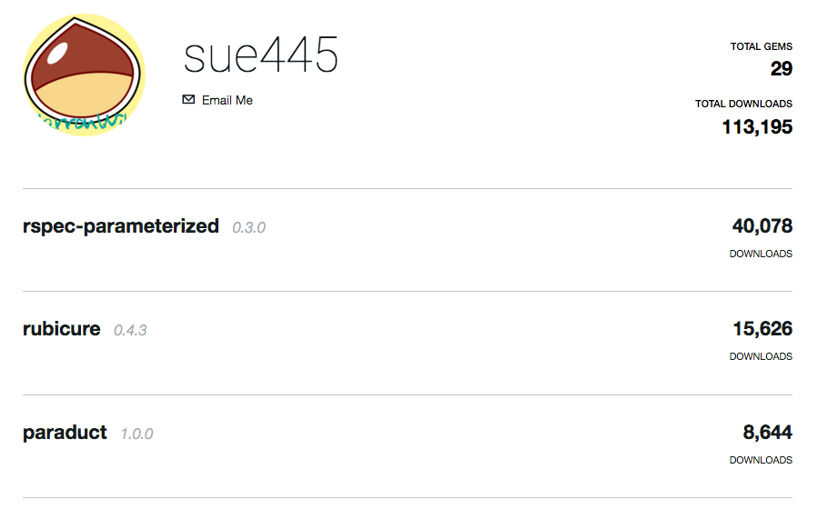
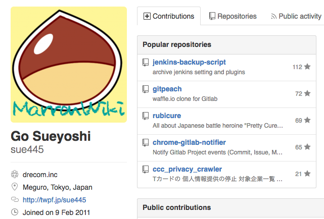
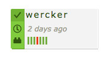
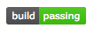
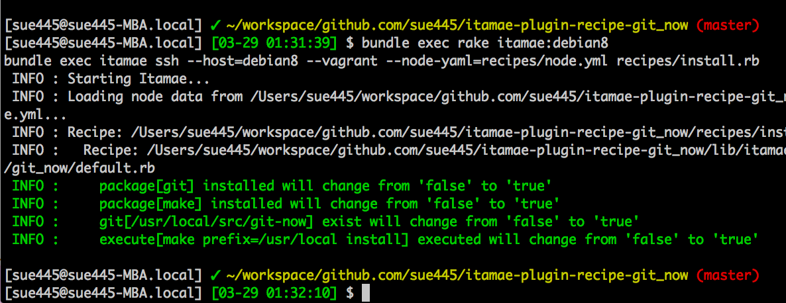
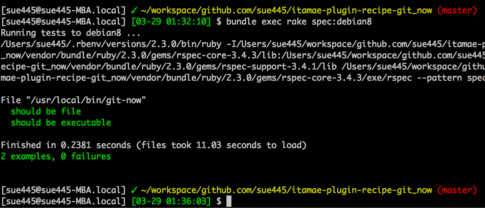
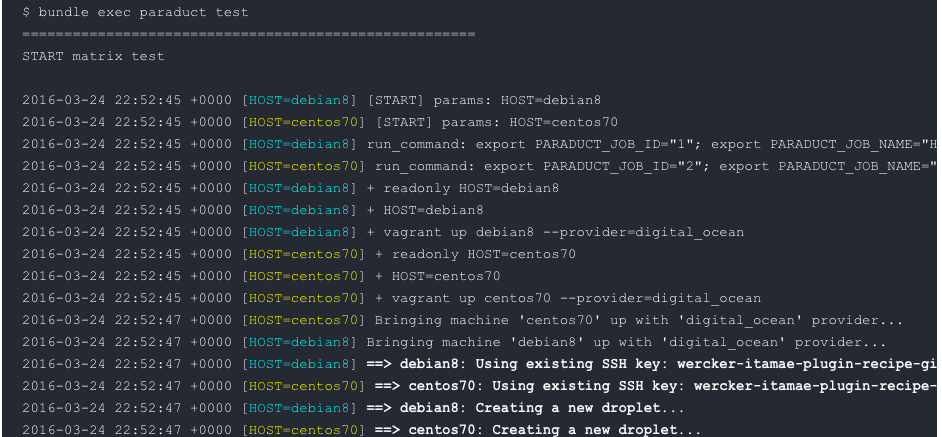

自己紹介 
- sue445
- Ruby歴：5年くらい
- golang歴：半年くらい
- Go歴：33年 -> 34年（34歳） (NEW!)
- 4/7が誕生日

- wishlist http://www.amazon.co.jp/registry/wishlist/3HH1FL88AQAG8/
- 4/7が誕生日
sue445
2016/04/07 表参道.rb #10
https://rubygems.org/profiles/sue445


レシピ（ミドルウェアのインストール手順など）をgemにしてRubygems.orgで公開することができる
gem "itamae-plugin-recipe-git_now"
include_recipe "git_now"
git-now がインストールされる
https://rubygems.org/search?utf8=%E2%9C%93&query=itamae-plugin
bundle gem 直後の expect(Itamae::Plugin::Recipe::Hoge::VERSION).not_to be nil しかないやつはノーカンbundle gem 直後の .travis.yml しかないやつはノーカン 
LTだと尺が足らないので駆け足でいきます。（詳しい手順は後日ブログに書きます）
からバイナリをインストール
include_recipe "git_now"
describe file("#{node[:git_now][:prefix]}/bin/git-now") do
it { should be_file }
it { should be_executable }
end
Serrverspec だとインフラの構成をrspecでテストすることができる
itamae実行

Serverspec実行

を使う方法について紹介
https://github.com/sue445/wercker-box-rvm-vagrant-digitalocean
box: sue445/rvm-vagrant-digitalocean@1.0.0
build:
steps:
- script:
name: test centos70
code: ./ci/build.sh centos70
- script:
name: test debian8
code: ./ci/build.sh debian8
#!/bin/bash -xe
readonly HOST=$1
vagrant up $HOST --provider=digital_ocean
bundle exec rake itamae:$HOST
bundle exec rake spec:$HOST
vagrant destroy -f $HOST
直列実行だと遅い（2つ合わせて5分くらいかかる）ので並列実行できるようにした
script: |-
./ci/build.sh ${HOST}
after_script: |-
vagrant destroy -f $HOST
variables:
HOST:
- debian8
- centos70
max_threads: 4
./ci/build.sh debian8 と ./ci/build.sh centos70 が並列に実行されるafter_script はビルドが失敗時しても必ず実行されるので確実にVMをdestroyしてくれるcapistranoみたいにホストごとに色がつくのが特徴

wercker.yml や Vagrantfile を熟読した